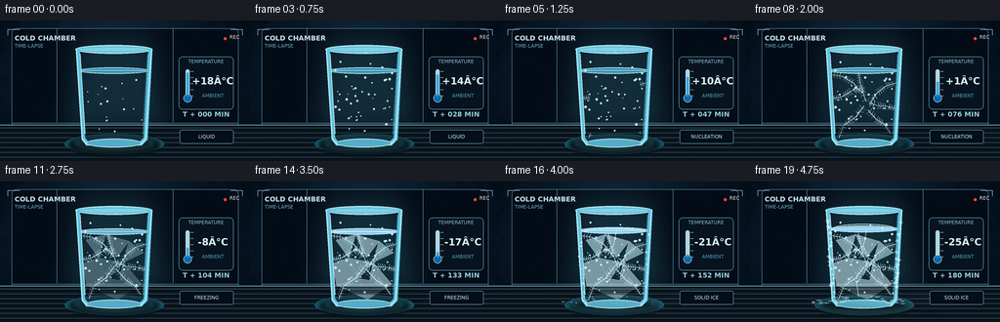
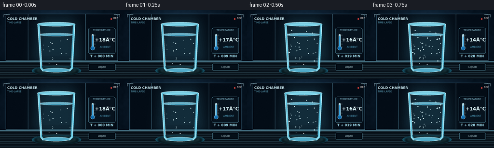
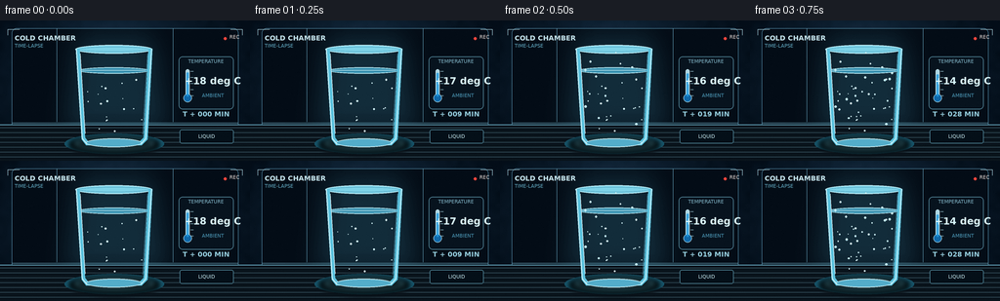

CODING AGENTS AS PIXEL WORLD MODELS
traex/GPT-5.6-Sol · phygen_091
点击播放 · 原生 RGB 像素
逐轮保存的候选
回放视频、检查图与代码变化。
每份候选均可单独播放。实际图片检查记录在下方工具轨迹中。
候选 01播放与检查图
点击播放 · 原生 RGB 像素


展开代码变化
--- 上一保存版本
+++ 本次保存版本
@@ -0,0 +1,314 @@
+from pathlib import Path
+import json, math
+import numpy as np
+from PIL import Image, ImageDraw, ImageFont, ImageFilter
+import artifact_io
+
+CASE_DIR = Path(__file__).resolve().parent
+spec = json.loads((CASE_DIR / "task_spec.json").read_text())
+W, H, N = spec["width"], spec["height"], spec["frames"]
+S = 4
+WW, HH = W*S, H*S
+rng = np.random.default_rng(91091)
+
+try:
+ FONT = ImageFont.truetype("/usr/share/fonts/truetype/dejavu/DejaVuSans.ttf", 7*S)
+ FONT_B = ImageFont.truetype("/usr/share/fonts/truetype/dejavu/DejaVuSans-Bold.ttf", 7*S)
+ FONT_S = ImageFont.truetype("/usr/share/fonts/truetype/dejavu/DejaVuSans.ttf", 5*S)
+ FONT_T = ImageFont.truetype("/usr/share/fonts/truetype/dejavu/DejaVuSans-Bold.ttf", 10*S)
+except OSError:
+ FONT = FONT_B = FONT_S = FONT_T = ImageFont.load_default()
+
+def sc(v): return int(round(v*S))
+def pts(seq): return [(sc(x),sc(y)) for x,y in seq]
+def smooth(x):
+ x=np.clip(x,0,1); return x*x*(3-2*x)
+def rgba_layer(): return Image.new("RGBA", (WW,HH), (0,0,0,0))
+def comp(a,b): return Image.alpha_composite(a,b)
+
+def line(draw, xy, fill, width=1): draw.line(pts(xy), fill=fill, width=max(1,sc(width)), joint="curve")
+def ellipse(draw, box, fill=None, outline=None, width=1):
+ draw.ellipse(tuple(sc(v) for v in box), fill=fill, outline=outline, width=max(1,sc(width)))
+def polygon(draw, xy, fill): draw.polygon(pts(xy), fill=fill)
+def rect(draw, box, fill=None, outline=None, width=1, radius=0):
+ b=tuple(sc(v) for v in box)
+ if radius: draw.rounded_rectangle(b, radius=sc(radius), fill=fill, outline=outline, width=max(1,sc(width)))
+ else: draw.rectangle(b, fill=fill, outline=outline, width=max(1,sc(width)))
+
+# Stable texture fields: no temporal flicker.
+small = rng.normal(0,1,(36,64))
+noise_img = Image.fromarray(np.uint8(np.clip(128+42*small,0,255))).resize((WW,HH),Image.Resampling.BICUBIC).filter(ImageFilter.GaussianBlur(sc(2)))
+NOISE = (np.asarray(noise_img).astype(float)-128)/42
+fine = rng.normal(0,1,(HH,WW))
+fine_img = Image.fromarray(np.uint8(np.clip(128+28*fine,0,255))).filter(ImageFilter.GaussianBlur(sc(.35)))
+FINE=(np.asarray(fine_img).astype(float)-128)/28
+
+# Persistent droplet positions and bubbles.
+drops=[]
+for i in range(28):
+ y=float(rng.uniform(32,112)); center=116.5; half=38-.075*(y-28)
+ x=float(rng.uniform(center-half+4,center+half-4))
+ drops.append((x,y,float(rng.uniform(.55,1.25)),float(rng.uniform(0,1))))
+bubbles=[]
+for i in range(18):
+ bubbles.append((float(rng.uniform(87,146)),float(rng.uniform(57,117)),float(rng.uniform(.35,1.0)),float(rng.uniform(0,6.28))))
+
+# Fixed late-stage frost crystals on glass exterior/table.
+frost_sparks=[]
+for i in range(65):
+ side = rng.choice([-1,1])
+ y=float(rng.uniform(39,122)); half=38-.075*(y-28)
+ x=116.5+side*(half+rng.uniform(-2.2,2.5))
+ frost_sparks.append((x,y,float(rng.uniform(.7,2.0)),float(rng.uniform(.15,.95))))
+base_crystals=[]
+for i in range(38):
+ a=float(rng.uniform(math.pi*.05,math.pi*.95)); r=float(rng.uniform(25,56))
+ base_crystals.append((116.5+math.cos(a)*r,126-math.sin(a)*r*.15,float(rng.uniform(1,3)),float(rng.uniform(.25,1))))
+
+# Dendrite trunks originate at the glass wall, surface and bottom.
+dendrites=[
+ [(84,80),(94,78),(104,72),(117,69)],
+ [(149,64),(139,67),(130,74),(122,86)],
+ [(91,120),(96,107),(108,99),(117,87)],
+ [(144,116),(137,106),(129,101),(119,90)],
+ [(80,55),(94,57),(106,64),(116,77)],
+ [(152,91),(141,88),(130,87),(116,82)],
+ [(111,53),(113,65),(117,78),(122,92)],
+]
+
+# Background built once as a high-resolution RGB gradient.
+yy,xx=np.mgrid[0:HH,0:WW]; X=xx/S; Y=yy/S
+vign=((X-W/2)/(W*.72))**2+((Y-H*.48)/(H*.9))**2
+light=np.exp(-(((X-118)/78)**2+((Y-57)/65)**2))
+base=np.zeros((HH,WW,4),dtype=np.uint8)
+base[...,0]=np.clip(10+15*light-11*vign+NOISE*1.2,3,35)
+base[...,1]=np.clip(23+28*light-14*vign+NOISE*1.5,8,59)
+base[...,2]=np.clip(36+39*light-17*vign+NOISE*2,13,80)
+base[...,3]=255
+BG=Image.fromarray(base,"RGBA")
+# chamber panels / deep background
+bgd=ImageDraw.Draw(BG,"RGBA")
+rect(bgd,(12,8,244,131),fill=(3,12,22,48),outline=(87,145,174,35),width=.5,radius=5)
+line(bgd,[(12,105),(244,105)],(116,181,204,25),.5)
+line(bgd,[(58,8),(58,104)],(109,171,198,17),.5)
+line(bgd,[(177,8),(177,104)],(109,171,198,17),.5)
+# cool light cone behind the subject
+cone=rgba_layer(); cd=ImageDraw.Draw(cone,"RGBA")
+polygon(cd,[(73,9),(163,9),(180,120),(59,120)],(89,191,224,10))
+cone=cone.filter(ImageFilter.GaussianBlur(sc(15)))
+BG=comp(BG,cone)
+
+def draw_background(im, p):
+ d=ImageDraw.Draw(im,"RGBA")
+ # Steel shelf with a cool reflection.
+ polygon(d,[(0,107),(256,107),(256,144),(0,144)],(9,19,27,255))
+ line(d,[(0,107),(256,107)],(117,189,214,66),.7)
+ for y in range(110,144,5):
+ line(d,[(0,y),(256,y)],(126,181,200,max(2,15-int((y-110)*.25))),.35)
+ ellipse(d,(66,116,168,137),fill=(22,83,104,30+int(35*p)))
+ # Header and recording cue establish a timelapse camera view.
+ d.text((sc(15),sc(14)),"COLD CHAMBER",font=FONT_B,fill=(199,230,238,210))
+ d.text((sc(15),sc(23)),"TIME-LAPSE",font=FONT_S,fill=(99,170,194,170))
+ ellipse(d,(229,17,232,20),fill=(255,71,62,220))
+ d.text((sc(235),sc(14)),"REC",font=FONT_S,fill=(234,220,216,190),anchor="la")
+ # Corner viewfinder ticks.
+ line(d,[(8,15),(8,9),(20,9)],(180,221,232,70),.6)
+ line(d,[(236,9),(248,9),(248,15)],(180,221,232,70),.6)
+
+def draw_thermometer(im, p, temp):
+ d=ImageDraw.Draw(im,"RGBA")
+ # frost-softened instrument panel on the right
+ rect(d,(183,37,239,91),fill=(7,19,30,188),outline=(116,185,208,80),width=.6,radius=4)
+ d.text((sc(211),sc(42)),"TEMPERATURE",font=FONT_S,fill=(131,183,201,190),anchor="mm")
+ # vertical track, bulb and falling mercury
+ rect(d,(190,50,194,78),fill=(172,214,226,32),outline=(197,231,238,110),width=.55,radius=2)
+ ellipse(d,(187.7,75.2,196.3,83.8),fill=(14,104,169,220),outline=(187,229,239,130),width=.6)
+ level=52+(temp-20)/(-45)*25
+ level=float(np.clip(level,52,77))
+ rect(d,(191.1,level,192.9,78),fill=(31,151,221,230),radius=.7)
+ # ticks
+ for j in range(5):
+ y=52+j*6.25
+ line(d,[(195,y),(198,y)],(170,215,228,100),.45)
+ d.text((sc(218),sc(62)),f"{temp:+.0f}°C",font=FONT_T,fill=(216,245,249,240),anchor="mm")
+ d.text((sc(218),sc(77)),"AMBIENT",font=FONT_S,fill=(77,155,186,175),anchor="mm")
+ # elapsed time readout
+ mins=int(round(p*180))
+ d.text((sc(211),sc(96)),f"T + {mins:03d} MIN",font=FONT_B,fill=(149,204,220,195),anchor="mm")
+
+def water_mask(top_y, bottom_y=123):
+ m=Image.new("L",(WW,HH),0); d=ImageDraw.Draw(m)
+ polygon(d,[(80.5,top_y),(152.5,top_y),(147,bottom_y),(86,bottom_y)],255)
+ ellipse(d,(80.5,top_y-3.3,152.5,top_y+3.3),fill=255)
+ ellipse(d,(86,bottom_y-3,147,bottom_y+2),fill=255)
+ return m.filter(ImageFilter.GaussianBlur(sc(.18)))
+
+def draw_dendrite(layer, path, growth, alpha=190):
+ """Grow an angular ice branch and deterministic paired side branches."""
+ if growth <= 0: return
+ d=ImageDraw.Draw(layer,"RGBA")
+ segs=[]
+ for a,b in zip(path[:-1],path[1:]):
+ segs.append((a,b,math.dist(a,b)))
+ total=sum(q[2] for q in segs); remaining=growth*total
+ traveled=0
+ for si,(a,b,L) in enumerate(segs):
+ if remaining<=0: break
+ frac=min(1,remaining/L)
+ e=(a[0]+(b[0]-a[0])*frac,a[1]+(b[1]-a[1])*frac)
+ line(d,[a,e],(204,242,252,int(alpha)),.72)
+ # crystalline branchlets along fully/partly exposed trunk
+ count=max(1,int(4*frac))
+ vx=(b[0]-a[0])/L; vy=(b[1]-a[1])/L
+ for k in range(count):
+ q=(k+1)/(count+1)*frac
+ cx=a[0]+(b[0]-a[0])*q; cy=a[1]+(b[1]-a[1])*q
+ bl=2.2+si*.55+k*.3
+ for sign in (-1,1):
+ ex=cx+(vx*.45-sign*vy)*bl
+ ey=cy+(vy*.45+sign*vx)*bl
+ line(d,[(cx,cy),(ex,ey)],(191,235,248,int(alpha*.78)),.46)
+ remaining-=L; traveled+=L
+
+def render(index):
+ p=index/(N-1)
+ temp=18-43*smooth(p*.92+0.04)
+ # Phase controls with visible sequential progression.
+ condensation=smooth(p/0.27)
+ nucleation=smooth((p-.18)/.30)
+ freezing=smooth((p-.34)/.48)
+ deep=smooth((p-.72)/.28)
+ im=BG.copy(); draw_background(im,p)
+
+ # Contact shadow contracts and gets a frozen halo.
+ sh=rgba_layer(); sd=ImageDraw.Draw(sh,"RGBA")
+ ellipse(sd,(72,119,162,136),fill=(0,0,0,115))
+ ellipse(sd,(77-deep*8,120-deep,157+deep*8,132+deep*2),outline=(126,218,239,int(105*deep)),width=1.0)
+ sh=sh.filter(ImageFilter.GaussianBlur(sc(2.3)))
+ im=comp(im,sh)
+
+ # Back edge of the empty glass first.
+ gd=ImageDraw.Draw(im,"RGBA")
+ ellipse(gd,(77,25,156,34),fill=(126,211,232,15),outline=(196,238,246,145),width=.85)
+ ellipse(gd,(80,27,153,32),outline=(82,166,194,105),width=.55)
+
+ # Liquid / ice body, clipped inside the tumbler. Freezing expansion lifts top.
+ top=51-2.6*deep
+ mask=water_mask(top)
+ ygrid=np.arange(HH)[:,None]/S
+ xgrid=np.arange(WW)[None,:]/S
+ clear=np.zeros((HH,WW,4),dtype=np.uint8)
+ # Transparent water becomes milky blue ice from wall/bottom inward.
+ depth=np.clip((ygrid-top)/(124-top),0,1)
+ edge=np.clip(np.abs(xgrid-116.5)/36,0,1)
+ frozen_field=np.clip(freezing*.76 + nucleation*(edge**3)*.52 + freezing*depth*.26,0,1)
+ texture=np.clip(NOISE*.55+FINE*.18,-1,1)
+ clear[...,0]=np.clip(27+frozen_field*112+texture*10*freezing,0,255)
+ clear[...,1]=np.clip(115+frozen_field*91+texture*12*freezing,0,255)
+ clear[...,2]=np.clip(151+frozen_field*79+texture*15*freezing,0,255)
+ clear[...,3]=np.clip(133+frozen_field*105,0,238)
+ body=Image.fromarray(clear,"RGBA"); body.putalpha(Image.fromarray((np.asarray(mask)*clear[...,3]/255).astype(np.uint8)))
+ im=comp(im,body)
+ wd=ImageDraw.Draw(im,"RGBA")
+ # Surface changes from flat transparent meniscus to raised frozen cap.
+ ellipse(wd,(80.5,top-3.1,152.5,top+3.5),fill=(57+int(90*freezing),145+int(61*freezing),176+int(63*freezing),105+int(105*freezing)),outline=(194,240,248,105+int(80*freezing)),width=.65)
+ line(wd,[(84,top),(149,top)],(215,247,252,110+int(80*freezing)),.45)
+ if deep>0:
+ # Expansion dome emphasized by a bright curved ridge.
+ wd.arc((sc(86),sc(top-5*deep),sc(147),sc(top+3)),180,360,fill=(223,250,252,int(170*deep)),width=sc(.65))
+
+ # Bubbles become immobilized and cloudy as the freezing front passes.
+ for bx,by,br,phase in bubbles:
+ rise=max(0,(1-freezing))*p*(2.5+1.3*math.sin(phase))
+ a=int(42+115*freezing)
+ ellipse(wd,(bx-br,by-rise-br,bx+br,by-rise+br),fill=(211,247,252,int(a*.16)),outline=(223,250,253,a),width=.35)
+
+ # Growing crystalline dendrites, clipped to glass interior.
+ crystal=rgba_layer()
+ for j,path in enumerate(dendrites):
+ g=np.clip(nucleation*1.22-j*.055,0,1)
+ draw_dendrite(crystal,path,float(g),alpha=120+int(75*freezing))
+ crystal.putalpha(Image.fromarray(np.minimum(np.asarray(crystal.getchannel("A")),np.asarray(mask)).astype(np.uint8)))
+ im=comp(im,crystal)
+
+ # Slushy plates and deep ice facets.
+ fac=rgba_layer(); fd=ImageDraw.Draw(fac,"RGBA")
+ facets=[[(88,60),(108,54),(101,78)],[(108,54),(132,61),(119,78)],[(132,61),(147,73),(126,83)],
+ [(84,84),(101,78),(111,99),(89,107)],[(101,78),(126,83),(111,99)],[(126,83),(145,105),(120,115)],
+ [(89,107),(111,99),(120,121)],[(111,99),(145,105),(120,121)]]
+ for j,q in enumerate(facets):
+ a=int(max(0,freezing-.15-j*.018)*72)
+ polygon(fd,q,(190+(j%2)*12,235,246,a))
+ line(fd,q+[q[0]],(223,249,253,int(a*1.25)),.45)
+ fac.putalpha(Image.fromarray(np.minimum(np.asarray(fac.getchannel("A")),np.asarray(mask)).astype(np.uint8)))
+ im=comp(im,fac)
+
+ # Thin expansion cracks appear only once almost solid.
+ if deep>0.1:
+ cd=ImageDraw.Draw(im,"RGBA")
+ for path in [[(119,50),(116,66),(121,78),(117,94)],[(116,66),(108,72),(104,82)],[(121,78),(132,87),(136,99)],[(117,94),(109,104),(111,118)]]:
+ count=max(2,int(len(path)*deep+.5)); line(cd,path[:count],(233,253,255,int(150*deep)),.55)
+
+ # Glass structure sits over contents: side highlights, refraction, base.
+ gd=ImageDraw.Draw(im,"RGBA")
+ polygon(gd,[(77.5,29),(83.5,122),(88,128),(145,128),(151,122),(156,29),(152,29),(147,120),(143,124),(90,124),(87,120),(81.5,29)],(91,194,222,15))
+ line(gd,[(78,29),(84,121),(89,127)],(202,239,245,142),1.0)
+ line(gd,[(155,29),(149,121),(144,127)],(196,238,247,136),1.0)
+ line(gd,[(82,34),(87,116)],(255,255,255,50),.5)
+ line(gd,[(151,34),(146,117)],(94,184,211,77),.6)
+ ellipse(gd,(88,121,145,130),fill=(83,173,202,25),outline=(211,244,249,150),width=.85)
+ ellipse(gd,(91,123,142,128),outline=(85,172,201,100),width=.45)
+
+ # Exterior condensation beads: initially appear, then crystallize/fade under frost.
+ for x,y,r,birth in drops:
+ vis=smooth((condensation-birth*.48)/.35)*(1-.72*deep)
+ if vis<=.02: continue
+ # a tiny downward streak implies elapsed time rather than noisy animation
+ drift=max(0,p-birth*.38)*1.6*(1-freezing)
+ ellipse(gd,(x-r,y+drift-r,x+r,y+drift+r),fill=(180,232,243,int(35*vis)),outline=(224,249,252,int(125*vis)),width=.35)
+ ellipse(gd,(x-r*.45,y+drift-r*.58,x,y+drift-r*.12),fill=(255,255,255,int(90*vis)))
+
+ # Frost blooms over the exterior at very low temperature.
+ for x,y,r,birth in frost_sparks:
+ g=smooth((deep-birth*.62)/.38)
+ if g<=.01: continue
+ a=int(150*g)
+ line(gd,[(x-r*g,y),(x+r*g,y)],(218,248,252,a),.4)
+ line(gd,[(x,y-r*g),(x,y+r*g)],(218,248,252,a),.4)
+ line(gd,[(x-r*.65*g,y-r*.65*g),(x+r*.65*g,y+r*.65*g)],(185,234,247,int(a*.7)),.32)
+ # Hoarfrost spreads out from the cold base onto the shelf.
+ for x,y,r,birth in base_crystals:
+ g=smooth((deep-birth*.8)/.28)
+ if g<=0: continue
+ line(gd,[(x-r*g,y),(x+r*g,y)],(174,227,239,int(105*g)),.4)
+ line(gd,[(x,y-r*.35*g),(x,y+r*.35*g)],(200,241,248,int(90*g)),.35)
+
+ # Fine low fog late in the run.
+ if deep>.1:
+ fog=rgba_layer(); fgd=ImageDraw.Draw(fog,"RGBA")
+ for k in range(5):
+ cx=69+k*23+math.sin(p*8+k)*4
+ ellipse(fgd,(cx,111+k%2*4,cx+52,128+k%3*2),fill=(129,212,231,int(11*deep)))
+ fog=fog.filter(ImageFilter.GaussianBlur(sc(5)))
+ im=comp(im,fog)
+
+ draw_thermometer(im,p,temp)
+ # Bottom progress strip: clean scientific visual rather than subtitles.
+ d=ImageDraw.Draw(im,"RGBA")
+ rect(d,(184,112,239,126),fill=(4,15,24,155),outline=(110,180,202,45),width=.45,radius=2)
+ stage="LIQUID" if p<.23 else "NUCLEATION" if p<.49 else "FREEZING" if p<.78 else "SOLID ICE"
+ d.text((sc(211.5),sc(119)),stage,font=FONT_S,fill=(195,231,239,210),anchor="mm")
+
+ # Downsample antialiased render and add subtle sensor grain without flicker.
+ im=im.convert("RGB").resize((W,H),Image.Resampling.LANCZOS)
+ arr=np.asarray(im).astype(np.int16)
+ static_grain=rng_static[index]
+ arr=np.clip(arr+static_grain,0,255).astype(np.uint8)
+ return arr
+
+# Deterministic low-amplitude per-frame sensor grain.
+rng2=np.random.default_rng(1091)
+rng_static=[rng2.normal(0,0.6,(H,W,1)).astype(np.int16) for _ in range(N)]
+frames=np.stack([render(i) for i in range(N)],axis=0)
+artifact_io.save(frames, CASE_DIR)
+print(f"Saved {frames.shape[0]} RGB frames at {frames.shape[2]}x{frames.shape[1]}")
候选 02播放与检查图
点击播放 · 原生 RGB 像素

展开代码变化
--- 上一保存版本
+++ 本次保存版本
@@ -130,7 +130,7 @@
for j in range(5):
y=52+j*6.25
line(d,[(195,y),(198,y)],(170,215,228,100),.45)
- d.text((sc(218),sc(62)),f"{temp:+.0f}°C",font=FONT_T,fill=(216,245,249,240),anchor="mm")
+ d.text((sc(218),sc(62)),f"{temp:+.0f} deg C",font=FONT_T,fill=(216,245,249,240),anchor="mm")
d.text((sc(218),sc(77)),"AMBIENT",font=FONT_S,fill=(77,155,186,175),anchor="mm")
# elapsed time readout
mins=int(round(p*180))
可观测工具轨迹
实际执行的命令与返回图片。
命令 1exit 0
/bin/bash -lc "cat prompt.txt && printf '\\n--- GENERATION_RULES.md ---\\n' && cat GENERATION_RULES.md && printf '\\n--- task_spec.json ---\\n' && cat task_spec.json"
命令 2exit 0
/bin/bash -lc "find . -maxdepth 2 -type f -printf '%p\\n' | sort && printf '\\n--- tools ---\\n' && command -v ffmpeg || true && command -v blender || true && command -v python3 || true"
命令 3exit 0
/bin/bash -lc 'cat artifact_io.py'
命令 4exit 0
/bin/bash -lc "cat > generate.py <<'PY'
from pathlib import Path
import json, math
import numpy as np
from PIL import Image, ImageDraw, ImageFont, ImageFilter
import artifact_io
CASE_DIR = Path(__file__).resolve().parent
spec = json.loads((CASE_DIR / \"task_spec.json\").read_text())
W, H, N = spec[\"width\"], spec[\"height\"], spec[\"frames\"]
S = 4
WW, HH = W*S, H*S
rng = np.random.default_rng(91091)
try:
FONT = ImageFont.truetype(\"/usr/share/fonts/truetype/dejavu/DejaVuSans.ttf\", 7*S)
FONT_B = ImageFont.truetype(\"/usr/share/fonts/truetype/dejavu/DejaVuSans-Bold.ttf\", 7*S)
FONT_S = ImageFont.truetype(\"/usr/share/fonts/truetype/dejavu/DejaVuSans.ttf\", 5*S)
FONT_T = ImageFont.truetype(\"/usr/share/fonts/truetype/dejavu/DejaVuSans-Bold.ttf\", 10*S)
except OSError:
FONT = FONT_B = FONT_S = FONT_T = ImageFont.load_default()
def sc(v): return int(round(v*S))
def pts(seq): return [(sc(x),sc(y)) for x,y in seq]
def smooth(x):
x=np.clip(x,0,1); return x*x*(3-2*x)
def rgba_layer(): return Image.new(\"RGBA\", (WW,HH), (0,0,0,0))
def comp(a,b): return Image.alpha_composite(a,b)
def line(draw, xy, fill, width=1): draw.line(pts(xy), fill=fill, width=max(1,sc(width)), joint=\"curve\")
def ellipse(draw, box, fill=None, outline=None, width=1):
draw.ellipse(tuple(sc(v) for v in box), fill=fill, outline=outline, width=max(1,sc(width)))
def polygon(draw, xy, fill): draw.polygon(pts(xy), fill=fill)
def rect(draw, box, fill=None, outline=None, width=1, radius=0):
b=tuple(sc(v) for v in box)
if radius: draw.rounded_rectangle(b, radius=sc(radius), fill=fill, outline=outline, width=max(1,sc(width)))
else: draw.rectangle(b, fill=fill, outline=outline, width=max(1,sc(width)))
# Stable texture fields: no temporal flicker.
small = rng.normal(0,1,(36,64))
noise_img = Image.fromarray(np.uint8(np.clip(128+42*small,0,255))).resize((WW,HH),Image.Resampling.BICUBIC).filter(ImageFilter.GaussianBlur(sc(2)))
NOISE = (np.asarray(noise_img).astype(float)-128)/42
fine = rng.normal(0,1,(HH,WW))
fine_img = Image.fromarray(np.uint8(np.clip(128+28*fine,0,255))).filter(ImageFilter.GaussianBlur(sc(.35)))
FINE=(np.asarray(fine_img).astype(float)-128)/28
# Persistent droplet positions and bubbles.
drops=[]
for i in range(28):
y=float(rng.uniform(32,112)); center=116.5; half=38-.075*(y-28)
x=float(rng.uniform(center-half+4,center+half-4))
drops.append((x,y,float(rng.uniform(.55,1.25)),float(rng.uniform(0,1))))
bubbles=[]
for i in range(18):
bubbles.append((float(rng.uniform(87,146)),float(rng.uniform(57,117)),float(rng.uniform(.35,1.0)),float(rng.uniform(0,6.28))))
# Fixed late-stage frost crystals on glass exterior/table.
frost_sparks=[]
for i in range(65):
side = rng.choice([-1,1])
y=float(rng.uniform(39,122)); half=38-.075*(y-28)
x=116.5+side*(half+rng.uniform(-2.2,2.5))
frost_sparks.append((x,y,float(rng.uniform(.7,2.0)),float(rng.uniform(.15,.95))))
base_crystals=[]
for i in range(38):
a=float(rng.uniform(math.pi*.05,math.pi*.95)); r=float(rng.uniform(25,56))
base_crystals.append((116.5+math.cos(a)*r,126-math.sin(a)*r*.15,float(rng.uniform(1,3)),float(rng.uniform(.25,1))))
# Dendrite trunks originate at the glass wall, surface and bottom.
dendrites=[
[(84,80),(94,78),(104,72),(117,69)],
[(149,64),(139,67),(130,74),(122,86)],
[(91,120),(96,107),(108,99),(117,87)],
[(144,116),(137,106),(129,101),(119,90)],
[(80,55),(94,57),(106,64),(116,77)],
[(152,91),(141,88),(130,87),(116,82)],
[(111,53),(113,65),(117,78),(122,92)],
]
# Background built once as a high-resolution RGB gradient.
yy,xx=np.mgrid[0:HH,0:WW]; X=xx/S; Y=yy/S
vign=((X-W/2)/(W*.72))**2+((Y-H*.48)/(H*.9))**2
light=np.exp(-(((X-118)/78)**2+((Y-57)/65)**2))
base=np.zeros((HH,WW,4),dtype=np.uint8)
base[...,0]=np.clip(10+15*light-11*vign+NOISE*1.2,3,35)
base[...,1]=np.clip(23+28*light-14*vign+NOISE*1.5,8,59)
base[...,2]=np.clip(36+39*light-17*vign+NOISE*2,13,80)
base[...,3]=255
BG=Image.fromarray(base,\"RGBA\")
# chamber panels / deep background
bgd=ImageDraw.Draw(BG,\"RGBA\")nPY"命令 5exit 0
/bin/bash -lc 'tail -8 generate.py'
命令 6exit 0
/bin/bash -lc 'python3 generate.py'
命令 7exit 0
/bin/bash -lc 'grep -n "temp:+" generate.py | cat -v'
命令 8exit 0
/bin/bash -lc "python3 - <<'PY'
p='generate.py'
s=open(p,encoding='utf-8').read().splitlines()
for i,line in enumerate(s):
if 'f\"{temp:+.0f}' in line:
s[i]=' d.text((sc(218),sc(62)),f\"{temp:+.0f} deg C\",font=FONT_T,fill=(216,245,249,240),anchor=\"mm\")'
open(p,'w',encoding='utf-8').write('\\n'.join(s)+'\\n')
PY
python3 generate.py
python3 - <<'PY'
from pathlib import Path
import numpy as np
from PIL import Image
p=Path('.')
z=np.load('pixels.npz')['pixels']
files=sorted((p/'frames').glob('*.png'))
print('pixels:', z.shape, z.dtype)
print('frames:',len(files), 'first:',Image.open(files[0]).mode,Image.open(files[0]).size)
print('artifacts:', {x: (p/x).stat().st_size for x in ['pixels.npz','index.html','inspection.png','transition_check.png']})
# temporal diagnostics: average pixel changes and distinct frames
ims=np.stack([np.asarray(Image.open(x)) for x in files])
print('mean adjacent MAE:',np.abs(np.diff(ims.astype(float),axis=0)).mean(axis=(1,2,3)).round(2).tolist())
print('unique frame hashes:',len({im.tobytes() for im in ims}))
PY"命令 9exit 0
/bin/bash -lc 'command -v chafa || command -v viu || command -v jp2 || true; python3 -m py_compile generate.py; ls -lah frames | tail -5; git status --short 2>/dev/null || true'
保存候选 2 份；完成命令 9 次；可验证图片返回 0 张。原始 API 响应与完整日志保留在本地。